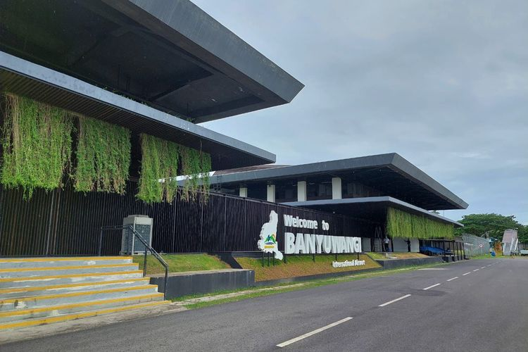

BANYUWANGI, KOMPAS.com - Promosi destinasi wisata Banyuwangi bakal diperkuat dalam beberapa waktu ke depan. Tak hanya pemasaran destinasi dan event, peluang menambah konektivitas penerbangan menuju ujung timur Pulau Jawa itu juga mulai dikaji untuk mendukung peningkatan kunjungan wisatawan.
Langkah tersebut menjadi bagian dari rencana kolaborasi antara PT Aviasi Pariwisata Indonesia (Persero) atau InJourney, Angkasa Pura, dan Pemerintah Kabupaten Banyuwangi.
Ketiganya mulai menyusun roadmap pengembangan pariwisata yang diharapkan mampu meningkatkan kunjungan wisatawan mancanegara sekaligus memperluas pergerakan wisatawan Nusantara.
Direktur Utama InJourney Maya Watono mengatakan Banyuwangi memiliki modal yang kuat untuk berkembang sebagai destinasi wisata kelas dunia. Menurutnya, kekayaan alam, budaya, kuliner, hingga kopi khas Banyuwangi menjadi daya tarik yang sudah dimiliki daerah tersebut.
Namun, potensi itu dinilai perlu diperkuat melalui strategi promosi yang lebih terintegrasi, pengemasan event yang semakin berkualitas, serta peningkatan akses menuju Banyuwangi.
"Kita akan merancang bersama peta jalan strategis untuk meningkatkan kunjungan wisatawan mancanegara sekaligus mendorong pemerataan pergerakan wisatawan Nusantara ke Banyuwangi," kata Maya usai bertemu Bupati Banyuwangi Ipuk Fiestiandani di Pendopo Sabha Swagata Banyuwangi, Jumat (31/7/2026).
Salah satu agenda yang masuk dalam perhatian adalah Gandrung Sewu yang akan digelar pada Oktober mendatang. InJourney menilai pertunjukan kolosal tersebut memiliki potensi lebih besar untuk dipromosikan sebagai etalase budaya Indonesia di tingkat internasional apabila didukung pengemasan dan promosi yang lebih luas.
Peluang penambahan penerbangan ke Banyuwangi
Selain promosi, akses menuju Banyuwangi juga menjadi perhatian. Direktur Utama Angkasa Pura Mohammad Rizal Pahlevi mengatakan pihaknya melihat peluang penambahan frekuensi penerbangan menuju Banyuwangi.
Meski demikian, rencana tersebut masih dalam tahap kajian agar dapat berjalan secara berkelanjutan.

Menurut Rizal, salah satu skema yang dipertimbangkan ialah menghubungkan Banyuwangi dengan destinasi wisata lain sehingga tingkat keterisian penumpang tetap terjaga. "Pengembangannya harus dirancang secara komprehensif, misalnya mengintegrasikan rute Banyuwangi dengan destinasi wisata lain sehingga tingkat keterisian penumpang tetap terjaga," ujarnya.
Bupati Banyuwangi Ipuk Fiestiandani menyambut rencana kolaborasi tersebut. Ia berharap penguatan promosi, peningkatan kualitas event, hingga pengembangan konektivitas udara dapat memperbesar daya saing Banyuwangi di pasar wisata nasional maupun internasional.
Menurut Ipuk, pertumbuhan sektor pariwisata tidak hanya berdampak pada meningkatnya jumlah kunjungan wisatawan, tetapi juga membuka peluang ekonomi yang lebih luas bagi masyarakat, mulai dari pelaku UMKM, perhotelan, restoran, hingga industri kreatif.